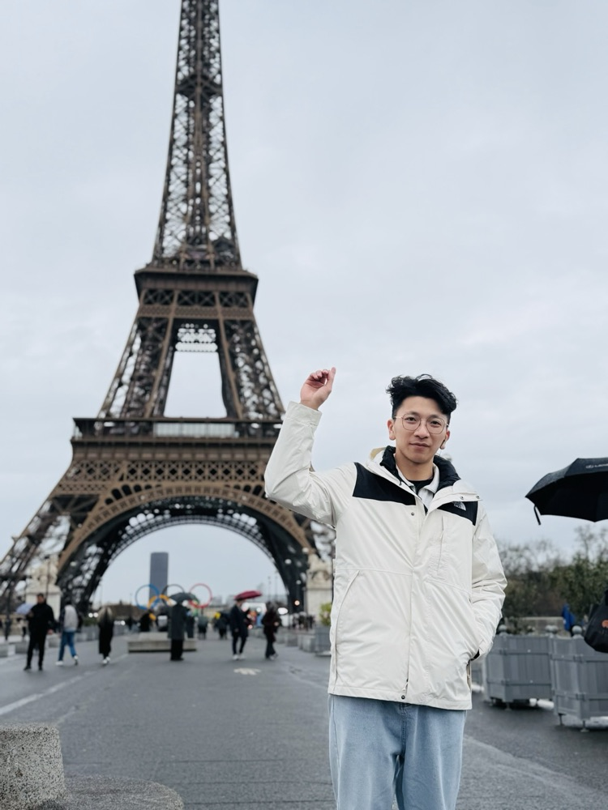

你留言「業務」，這篇就是我要給你的。我入行的時候想的是賺錢，現在留下來的原因，已經不只是錢了。是這行給我的東西，別的工作給不了。
富邦人壽業務主任，做這行第三年。我帶過人，也看過人走，這篇寫的是留下來的人拿到了什麼。
做自己的富一代上班是做多做少領一樣，這裡是你今天多見一個人，下個月的數字就不一樣。
做得出來就是你的，做不出來也沒有人補你，這兩件事是同一件事。
你在這裡練的東西不會留在公司，換到哪裡，都是你的。
前面那段要自己撐，撐過去之後，你會發現你什麼都不怕。
不用等年底考績、不用猜主管怎麼想，每個月的數字就是答案。
那個答案有時候很難看，但你會知道下個月要改哪裡，這比猜快太多。

不是口才好，是聽得懂對方真正在意什麼。
成交的關鍵從來不是你講得多好，是你問得多準。這個能力你去哪裡都用得到。
一天被拒絕三次是日常。一開始我會難過一整天，後來我知道：他拒絕的是那個當下，不是我這個人。
這件事想通之後，你在任何場合都不會怕開口。
我可以跟你講一堆商品條款，你也記不住。但我說「這筆錢是你生病時不用動到存款的那筆」，你就懂了。
AI 什麼專業知識都查得到，差別在誰能把它講成對方聽得懂、而且願意行動的話。這是這行最值錢的地方。
問自己三個問題就好：
你願意挑戰一次看看嗎？
如果願意的話，我很想跟你聊。
上面那三種能力，在你現在的工作也練得起來。
先挑一樣練，練到有人指名找你。到那個時候，要不要換，主動權在你手上。